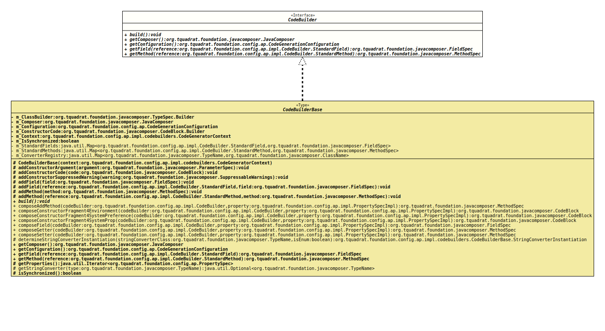

Interface CodeBuilder
- All Known Implementing Classes:
CLIBeanBuilder,CodeBuilderBase,ConfigBeanBuilder,I18nSupportBuilder,INIBeanBuilder,MapImplementor,PreferencesBeanBuilder,SessionBeanBuilder
@ClassVersion(sourceVersion="$Id: CodeBuilder.java 1085 2024-01-05 16:23:28Z tquadrat $")
@API(status=STABLE,
since="0.1.0")
public interface CodeBuilder
An API to the internals of the code builders.
- Author:
- Thomas Thrien (thomas.thrien@tquadrat.org)
- Version:
- $Id: CodeBuilder.java 1085 2024-01-05 16:23:28Z tquadrat $
- Since:
- 0.1.0
- UML Diagram
-

UML Diagram for "org.tquadrat.foundation.config.ap.impl.CodeBuilder"
{kind=link}
-
Nested Class Summary
Nested ClassesModifier and TypeInterfaceDescriptionstatic enumThe standard fields.static enumThe standard methods. -
Method Summary
Modifier and TypeMethodDescriptionvoidbuild()Generates the relevant code.Provides access to the composer.Provides access to the code builder configuration.getField(CodeBuilder.StandardField reference) Returns the specification for a standard field.getMethod(CodeBuilder.StandardMethod reference) Returns the specification for a standard method.
-
Method Details
-
build
void build()Generates the relevant code. -
getComposer
Provides access to the composer.- Returns:
- The composer.
-
getConfiguration
Provides access to the code builder configuration.- Returns:
- The configuration.
-
getField
Returns the specification for a standard field.- Parameters:
reference- The identifier for the standard field.- Returns:
- The field.
-
getMethod
Returns the specification for a standard method.- Parameters:
reference- The identifier for the standard method.- Returns:
- The method.
-